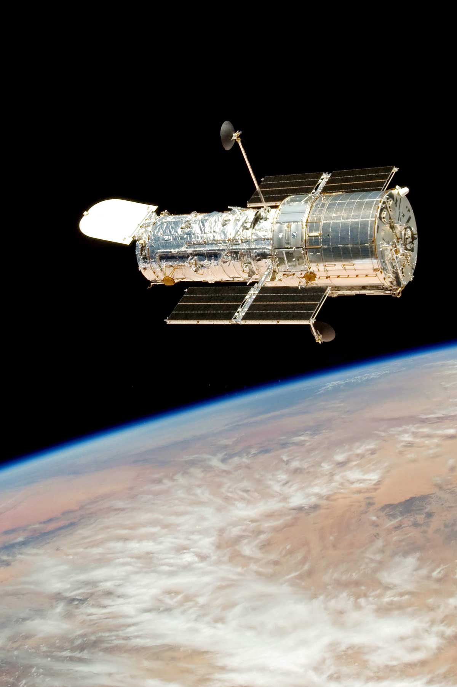

Hubble Space Telescope

The Hubble Space Telescope is a large telescope in space. NASA launched Hubble in 1990.
It was named after P. Hubble. He was an astronomer who studied the planets, stars and space.For more information
Facts about Hubble Telescope
- Hubble Space Telescope is about the size of a large school bus.
- Hubble orbits the Earth at a cruising speed of 17,000 miles per hour, and takes 15 minutes to rotate 90 degrees.
- Hubble has observed locations more than 13.4 billion light years away, meaning it has seen light that existed in the universe 13.4 billion years ago.
- link to some of the pics that hubble telescope has captured:pictures